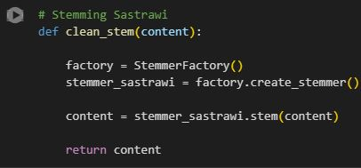

Project information
- Category: Machine Learning
- Domain: Natural Language Processing (NLP)
- Desc: Mini project by Orbit Future Academy 2022
Analisis Sentimen Ulasan Pengguna Dana
Dana is a digital wallet platform designed to facilitate transactions, simply by topping up the balance. Dana's reputation can be assessed through user reviews, in the form of feedback, criticism, and appreciation. Although the number of star ratings can indicate reviews, the content does not always match with the high star ratings. Sentiment analysis of review content provides deeper insights into user evaluations of Dana and can be used for informed decision-making.
- Data Acquisition
Tahapan pertama yaitu melakukan data acquisition
dengan menggunakan teknik scraping pada Google Play Store
(API Google-Play-Scraper) dengan bahasa pemprograman Python, bertujuan untuk
pengambilan data secara otomatis dari ulasan terbaru pengguna Dana. Dengan cara terlebih dahulu install package yang dibutuhkan,
setelah itu akan dilakukan tahap scraping data dengan menggunakan 600 dataset pada yang terbaru (pada April 2022) yang dapat disimpan kedalam file CSV dan Excel.

Tahapan selanjutnya yaitu melakukan data exploration untuk memahami data hasil dari scraping Google Playstore. Data yang akan digunakan hanya kolom "content" dan "score", dengan cara membuat dataframe baru. Kemudian menentukan sentimen positif dan negatif berdasarkan kolom tersebut. Jika nilai score <= 3 maka merupakan sentimen negatif (0), sedangkan untuk nilai score >3 maka merupakan sentimen positif (1).
Setelah menentukan parameter sentimen positif dan sentimen negatif, didapatkan hasil yang tidak seimbang antara kedua sentimen tersebut dengan cara menggunakan syntax ".value_counts()". Yaitu untuk sentimen negatif (0) sebesar 485 dan sentimen positif (1) sebesar 115. Maka harus melakukan resampling data agar menghasilkan data yang seimbang, yaitu menjadi 100 untuk sentimen negatif dan sentimen positif. Kemudian dilakukan reset index untuk data yang dihasilkan dimulai dari 0 untuk dataframe.
Pada grafik dibawah ini menunjukan komposisi yang dihasilkan tiap score (rating) dari 1 sampai 5
yang diberikan oleh pengguna Dana.
Tahap selanjutnya yaitu melakukan prepocessing data yang bertujuan untuk menyeleksi data text agar terstruktur tergantung dengan kondisi data text. Pada proses ini menggunakan tahapan case folding, data cleaning, stopword removal, koreksi penulisan yang tidak baku, dan stemming. Adapun yang digunakan untuk Case Folding dan data cleaning dibawah ini yaitu:
- Convert all characters to lowercase
- Replace non-lowercase letter (a-z), punctuation, and number with a space
- Replace every tab with a space
- Replace every newline with a space
- Replace one or more whitespace with a single space
- Remove whitespace from the beginning and the end
Untuk Stopword Removal yaitu kata-kata yang sering muncul yang tidak memiliki
arti. Contoh stopwords dalam bahasa Indonesia (Sastrawi) dengan menggunakan modul "stopWordRemoverFactory" seperti:
'yang', 'untuk', 'pada', 'ke', 'para', 'namun', 'menurut', 'antara', dll. Pada proses ini dengan menggabungkan stopword dari perpustakaan Sastrawi, NLTK Indonesia,
serta stopword dokumen/corpus yang dibuat sendiri dengan menambah kata sesuai kebutuhan.


Dikarenakan terdapat kalimat singkatan, kesalahan penulisan, dan kalimat tidak baku yang dilakukan oleh pengguna Dana.
Maka, akan dilakukan koreksi penulisan secara manual melalui file ".txt".

Tahapan selanjutnya yaitu stemming yang bertujuan untuk mengurangi variasi kata yang berbeda dengan cara menghilangkan imbuhan ke bentuk dasarnya. Setelah proses selesai, akan disimpan kedalam file ".csv". 
Setelah data diolah menjadi data yang lebih terstruktur, tahap selanjutnya yaitu melakukan modelling dan evaluation.
Dengan menggunakan model SVM (Support Vector Machine) untuk mengklasifikasikan kelas sentimen positif dan negatif.
Isi konten terlebih dahulu diubah menjadi representasi vektor menggunakan TF-IDF,
yang kemudian model SVM dapat dilatih pada data yang sudah dilabeli sentimen. Sehingga SVM dapat
menentukan keputusan berdasarkan kelas sentimen dari komentar yang belum diketahui secara akurat.
 Nilai akurasi yang didapatkan yaitu 61%, artinya nilai rendah disebabkan karena word normalizer atau pada koreksi kata tambahan tidak maksimal, sehingga penggunaan kata tidak baku dan kesalahan penulisan kata maupun singkatan pada kebiasaan pengguna Dana tidak ditangani dengan baik
Nilai akurasi yang didapatkan yaitu 61%, artinya nilai rendah disebabkan karena word normalizer atau pada koreksi kata tambahan tidak maksimal, sehingga penggunaan kata tidak baku dan kesalahan penulisan kata maupun singkatan pada kebiasaan pengguna Dana tidak ditangani dengan baik